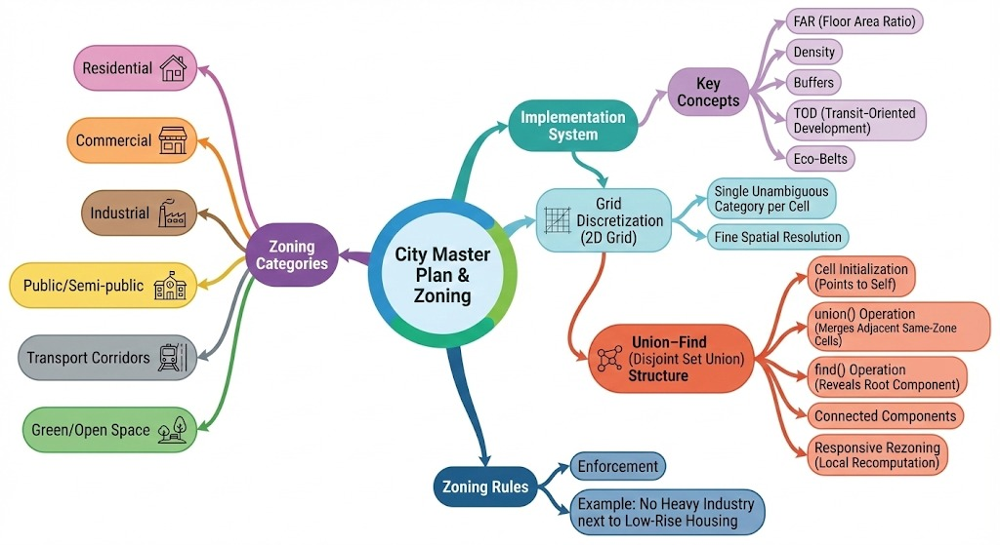
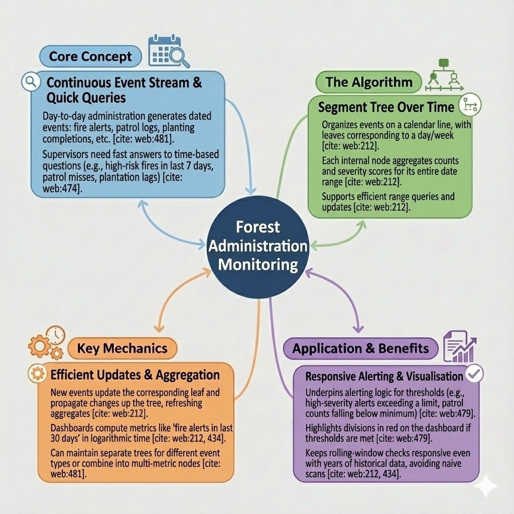
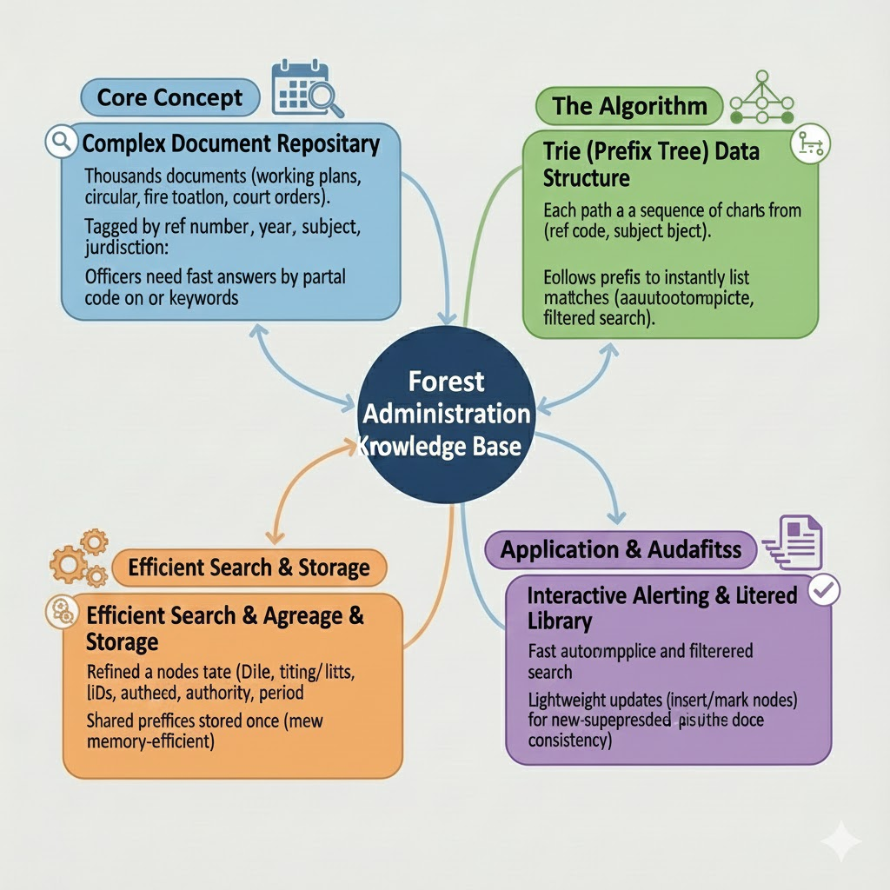

The master plan for Samarthaka divides land into zoning categories such as Residential, Commercial,
Industrial, Public/Semi‑public, Transport Corridors and Green/Open Space. Each category carries its own
bundle of regulations like FAR ranges, density bands, and buffer requirements between conflicting uses,
turning the master plan into a clear rulebook rather than just colours on a map.
To make this computable, the city is discretised into a regular 2D grid where each cell represents a
small land parcel and stores exactly one zoning label (R, C, I, P, T or G). This simple grid lets the
system quickly identify neighbours in four directions and attach zoning rules directly to individual
cells, but by itself it still treats parcels as isolated points.
The structure that actually groups parcels into meaningful zoning pockets is the
Union–Find (Disjoint Set / Quick‑Find) layer built on top of the grid. Each cell starts in its
own set; whenever two adjacent cells share the same zone type, the unionn(u, v) operation
relabels every parcel that was in the same block as u so that it now uses the block id of
v. The unionfind(u, v) check simply compares the stored ids to decide whether
two plots currently lie in the same zoning block.
With this representation, typical planning questions become cheap operations on the zoning engine:
“Are these two plots in the same residential cluster?” is answered by a single
unionfind(u, v) call; “Merge these two compatible pockets along a corridor” is just one
unionn(u, v) that updates all affected cells. When rezoning happens near a junction or
metro station, only the corresponding cells are relabelled and their unions recomputed, while the
remainder of the city grid stays untouched, keeping the master plan responsive and easy to maintain.
Implementation:

Data Structure:Union Find
C++ Logic used
#include <iostream>
using namespace std;
int unionfind(int arr[], int u, int v) {
if (arr[u] == arr[v])
return 1;
else
return 0;
}
// merge zoning block of u into zoning block of v
void unionn(int arr[], int n, int u, int v) {
int old_id = arr[u];
int new_id = arr[v];
if (old_id == new_id) return; // no work needed
for (int i = 0; i < n; i++) {
if (arr[i] == old_id)
arr[i] = new_id;
}
}
int main() {
ios::sync_with_stdio(false);
cin.tie(nullptr);
int n, m, q;
cin >> n; // number of plots (e.g. up to 5000)
int *arr = new int[n];
// initially, each plot is its own zoning block
for (int i = 0; i < n; i++)
arr[i] = i;
cin >> m; // number of unions
while (m--) {
int u, v;
cin >> u >> v; // 0-based plot indices
if (u >= 0 && u < n && v >= 0 && v < n)
unionn(arr, n, u, v);
}
cin >> q; // number of queries
while (q--) {
int u, v;
cin >> u >> v;
if (u >= 0 && u < n && v >= 0 && v < n) {
if (unionfind(arr, u, v))
cout << "Same zoning block\n";
else
cout << "Different zoning blocks\n";
} else {
cout << "Invalid plot index\n";
}
}
delete[] arr;
return 0;
}
Housing & Development Controls
For housing and development rules, all regulation bands—combinations of zone, road width, FAR limit, height
cap, plot size range and open‑space requirements—are treated as clean data and organised into an ordered
structure backed by a balanced Red‑Black tree using std::map / std::set.
When a building or layout is proposed, its parameters (zone, abutting road width, plot area) are converted
into a composite key and used to look up the matching regulation band in log time, then the proposed FAR,
height and setbacks are checked against the values stored in that band.
To support fast queries and easy evolution of the rules, all these bands sit inside the balanced Red‑Black
tree rather than in ad‑hoc if‑else blocks. The tree automatically maintains its height as bands are inserted
or updated, so lookups continue to run in O(log n) time even when hundreds of base rules and
overlays exist. Once the correct node is found, the value at that node directly exposes the
permitted FAR, maximum height and setback distances; the checking step only has to compare the proposal’s
numbers against these limits to decide whether it is compliant.
This tree‑based design keeps the rule set flexible, which is essential for a growing city. If a new metro line
is introduced and a higher‑FAR transit‑oriented development band is needed along a defined corridor, that band
is simply added as a new key in the Red‑Black tree without touching the evaluation pipeline.
Likewise, if eco‑sensitive edges need stricter caps, their corresponding keys are tightened in place and all
future proposals automatically see the updated limits.
Every proposal therefore passes through the same predictable sequence: construct the composite key from its
zone, road width and plot area; perform a log‑time lookup in the tree; and validate the submitted FAR, height
and setbacks against the retrieved band. Policy changes become a matter of editing data in the tree rather than
rewriting code paths, which keeps the housing and development control layer both technically clean and easy to
align with new planning decisions.
#include <iostream>
#include
using namespace std;
// ---------- Red‑Black tree key & value ----------
struct BandKey {
string zone;
int road_width_m; // here derived from max_height_m just for demo
int plot_band_id;
bool operator<(const BandKey &o) const {
if (zone != o.zone) return zone < o.zone;
if (road_width_m != o.road_width_m) return road_width_m < o.road_width_m;
return plot_band_id < o.plot_band_id;
}
};
struct RegBand {
double max_far;
double max_height_m;
};
// ---------- Proposals ----------
struct Proposal {
string zone;
double road_width_m;
double plot_area_sqm;
double proposed_far;
double proposed_height_m;
};
// ---------- Globals ----------
map bandTree;
// ---------- Helpers ----------
int plot_band(double a) {
if (a < 60.0) return 1;
if (a < 120.0) return 2;
if (a < 240.0) return 3;
if (a < 480.0) return 4;
return 5;
}
int round_road(double w) {
return static_cast(round(w));
}
vector split_csv(const string &line) {
vector out;
string cur;
bool in_quotes = false;
for (char c : line) {
if (c == '"') {
in_quotes = !in_quotes;
} else if (c == ',' && !in_quotes) {
out.push_back(cur);
cur.clear();
} else {
cur.push_back(c);
}
}
out.push_back(cur);
return out;
}
// ---------- Load bands from CSV ----------
void load_bands_from_csv(const string &filename) {
ifstream fin(filename);
if (!fin.is_open()) {
cerr << "Cannot open file: " << filename << "\n";
exit(1);
}
string line;
// header
if (!getline(fin, line)) {
cerr << "Empty file\n";
exit(1);
}
while (getline(fin, line)) {
if (line.empty()) continue;
auto cols = split_csv(line);
if (cols.size() < 7) continue; // sanity
string zone_code = cols[1];
double plot_area = stod(cols[4]);
double max_far = stod(cols[5]);
double max_height_m = stod(cols[6]);
int pb = plot_band(plot_area);
int rw = round_road(max_height_m); // placeholder for road width
BandKey key{zone_code, rw, pb};
RegBand rb{max_far, max_height_m};
// insert / update band
bandTree[key] = rb;
}
fin.close();
}
// ---------- Evaluate a proposal ----------
bool evaluate(const Proposal &p, string &reason) {
BandKey k{p.zone, round_road(p.road_width_m), plot_band(p.plot_area_sqm)};
auto it = bandTree.find(k);
if (it == bandTree.end()) {
reason = "no matching band";
return false;
}
const RegBand &rb = it->second;
if (p.proposed_far > rb.max_far) {
reason = "FAR exceeds " + to_string(rb.max_far);
return false;
}
if (p.proposed_height_m > rb.max_height_m) {
reason = "height exceeds " + to_string(rb.max_height_m);
return false;
}
reason = "OK";
return true;
}
// ---------- Main demo ----------
int main() {
ios::sync_with_stdio(false);
cin.tie(nullptr);
// change to your actual CSV name
string filename = "land_housing_zoning_with_status.csv";
load_bands_from_csv(filename);
cout << "Loaded " << bandTree.size() << " bands into RB‑tree\n";
// two sample proposals using real‑ish values
Proposal p1{
"RZ_RES_LOW", 17.0, 110.0, 1.8, 16.0
};
Proposal p2{
"RZ_RES_LOW", 17.0, 110.0, 3.0, 25.0
};
for (int i = 0; i < 2; ++i) {
Proposal p = (i == 0 ? p1 : p2);
string reason;
bool ok = evaluate(p, reason);
cout << "Proposal " << (i + 1) << ": "
<< (ok ? "APPROVED: " : "REJECTED: ")
<< reason << "\n";
}
return 0;
}
Permissions, Phasing & Updates
The flow of applications is treated as a controlled processing pipeline and implemented with a
double‑ended queue (deque). Normal building and layout applications enter at the back and are
processed from the front in a clean FIFO manner, while phase‑critical or policy‑priority projects
(such as public or affordable housing) can be pushed to the front to be handled earlier.
Each application’s full data is stored in an indexed array or vector; the deque manages the order through
push_back, push_front and pop_front in constant time. This mirrors how permissions,
phasing and plan updates work in practice—mostly queue‑based, but with the flexibility to fast‑track or
defer specific cases when the city’s development strategy demands it.
#include <iostream>
#include
using namespace std;
// One application record loaded from CSV
struct Application {
string app_id;
string zone;
double plot_area_sqm;
double road_width_m;
double proposed_far;
double proposed_height_m;
string priority; // "PRIORITY" or "NORMAL"
string status; // APPROVED / DEFERRED / PENDING
string phase; // PHASE_1 / PHASE_2 / ...
int processed_order; // 1..1000
string fast_tracked; // "YES" / "NO"
};
int main() {
ios::sync_with_stdio(false);
cin.tie(nullptr);
// ------------ load CSV into vector ------------
// Assumes a file "applications_processed.csv" with 1000 rows
// and header: app_id,zone,plot_area_sqm,road_width_m,proposed_far,proposed_height_m,priority,status,phase,processed_order,fast_tracked
ifstream fin("ananya/Datasets/applications_processed.csv");
if (!fin) {
cerr << "Could not open applications_processed.csv\n";
return 1;
}
vector apps;
string line;
// skip header
getline(fin, line);
while (getline(fin, line)) {
if (line.empty()) continue;
stringstream ss(line);
string token;
Application a;
getline(ss, a.app_id, ',');
getline(ss, a.zone, ',');
getline(ss, token, ','); a.plot_area_sqm = stod(token);
getline(ss, token, ','); a.road_width_m = stod(token);
getline(ss, token, ','); a.proposed_far = stod(token);
getline(ss, token, ','); a.proposed_height_m = stod(token);
getline(ss, a.priority, ',');
getline(ss, a.status, ',');
getline(ss, a.phase, ',');
getline(ss, token, ','); a.processed_order = stoi(token);
getline(ss, a.fast_tracked, ',');
apps.push_back(a);
}
cout << "Loaded " << apps.size() << " applications\n";
// ------------ processing pipeline using deque ------------
deque dq; // stores indices into apps vector
for (int i = 0; i < (int)apps.size(); ++i) {
const Application &a = apps[i];
bool is_priority = (a.priority == "PRIORITY") || (a.fast_tracked == "YES");
if (is_priority) {
// phase‑critical or policy‑priority: go to the front
dq.push_front(i); // O(1)
} else {
// normal application: join the back of the queue
dq.push_back(i); // O(1)
}
}
// Process applications in pipeline order (front of deque)
while (!dq.empty()) {
int idx = dq.front();
dq.pop_front(); // O(1)
Application &a = apps[idx];
// Example processing logic: here just print a summary line
cout << "Processing " << a.app_id
<< " zone=" << a.zone
<< " priority=" << a.priority
<< " fast_tracked=" << a.fast_tracked
<< " phase=" << a.phase << "\n";
// In a real system, this is where approval/deferral rules would run,
// possibly updating a.status or a.phase.
}
return 0;
}
Wildlife & Management
Patrol & Security – Dijkstra (Single Source)
The wildlife zone is treated as a live, data‑driven patrol network where every watchtower, gate, water reservoir and conflict‑prone location is connected by trails and forest roads.
Rangers at any post can always ask the system for the fastest safe route to a new incident point, whether it is a poaching alert near a boundary or a distress call near a water body.
In the implementation, each of these locations becomes a node in a weighted graph, and every road or path between them is an edge with a cost representing travel time, terrain difficulty or risk level.
The graph is stored using adjacency lists so that from any location it is efficient to scan all outgoing paths and update their tentative travel cost during routing.
From a selected starting tower or base camp, Dijkstra’s single‑source shortest path algorithm is run once to compute the minimum‑time route to every other node in the reserve.
Internally, the system maintains a distance array, a visited set, and a min‑priority queue that repeatedly picks the unvisited node with the smallest known travel time and relaxes its outgoing edges to see if they provide a faster route to neighbouring patrol points.
In practice, this behaves like a GPS tailored to conservation work: once the rangers’ current position is fixed, the system can instantly answer “what is the best route to this incident?” by looking up the pre‑computed distance and reconstructing the path.
If monsoon conditions or temporary closures make certain tracks slower or unsafe, the corresponding edge weights are increased, and the next run of Dijkstra automatically diverts patrols along alternate trails that are slightly longer in distance but better in effective response time and safety.
This allows the patrolling module to be framed as hands‑on work: the wildlife wing was modelled as a weighted graph over the reserve’s patrol grid, with Dijkstra’s algorithm driving both routine patrol planning and time‑critical responses.
Routes and priorities are no longer based purely on intuition; they adapt continuously to terrain, season and historical patrol data, making coverage and incident response more objective, transparent and data‑driven for the forest department.
#include <iostream>
#include
using namespace std;
struct NodeInfo {
int id;
string type;
double dist; // minutes from source (precomputed by Python)
};
int main() {
ios::sync_with_stdio(false);
cin.tie(nullptr);
string filename = "wildlife_patrol_distances.csv";
ifstream fin(filename);
if (!fin) {
cerr << "Could not open " << filename << "\n";
return 1;
}
vector nodes;
string line;
// skip header
if (!getline(fin, line)) {
cerr << "Empty CSV\n";
return 1;
}
while (getline(fin, line)) {
if (line.empty()) continue;
stringstream ss(line);
string token;
NodeInfo ni;
// node_id
getline(ss, token, ',');
ni.id = stoi(token);
// node_type
getline(ss, ni.type, ',');
// distance_from_source_minutes
getline(ss, token, ',');
ni.dist = stod(token);
nodes.push_back(ni);
}
cout << "Loaded " << nodes.size()
<< " patrol points with precomputed travel times.\n\n";
cout << "Node Type MinTime(from source, min)\n";
for (const auto &ni : nodes) {
cout << setw(4) << ni.id << " "
<< setw(12) << ni.type << " "
<< fixed << setprecision(2) << ni.dist << "\n";
}
// Example: sort by travel time to suggest response order
sort(nodes.begin(), nodes.end(),
[](const NodeInfo &a, const NodeInfo &b) {
return a.dist < b.dist;
});
cout << "\nSuggested incident response order (closest first):\n";
for (int i = 0; i < min(10, nodes.size()); ++i) {
const auto &ni = nodes[i];
cout << i + 1 << ") node " << ni.id
<< " (" << ni.type << "), "
<< ni.dist << " minutes from source\n";
}
return 0;
}
}
Animal Health
Wildlife health management is organised into three parts: emergency triage, central storage of animal
details and stock monitoring for water and medical supplies. Each component is mapped to a specific
data structure that reflects how a real sanctuary needs to react and plan every day.[web:113]
a) Emergency – Max‑Heap
During emergencies, vets must immediately know which case is most critical. Every animal is given a
dynamic risk score based on injuries, illness, behaviour changes and recent reports. These entries are
kept in a max‑heap, ordered by risk score, so the animal at the top is always the one that needs
attention first; updating a score and pushing it back into the heap keeps the priority list constantly
refreshed.
Each animal in the sanctuary receives a unique ID linked to species, age, location, health notes and
current risk score. These records are stored in a hashmap keyed by animal ID, which provides
constant‑time access during patrols and routine checks, so any profile can be pulled or updated without
scanning long lists.
Alongside the live record, a vector of historical health snapshots is maintained per animal. At the end
of each check cycle, a new entry is appended with date, risk score and remarks, enabling trend analysis
over weeks or months without slowing real‑time operations.
C++ Logic used (Array‑based Hash Lookup for Animal Records)
#include
using namespace std;
const int MAX_ANIMALS = 1000;
// Array-based "hash map" (direct index = Animal_ID)
string speciesArr[MAX_ANIMALS];
int riskScoreArr[MAX_ANIMALS];
string zoneArr[MAX_ANIMALS];
int ageArr[MAX_ANIMALS];
string lastCheckArr[MAX_ANIMALS];
int healthScoreArr[MAX_ANIMALS]; // single score only
// Generate a random recent date (last 30 days) in DD-MM-YYYY format
string randomRecentDate(mt19937 &gen) {
uniform_int_distribution dayBack(1, 30);
int back = dayBack(gen);
using namespace chrono;
auto today = chrono::system_clock::now();
auto target = today - chrono::hours(24 * back);
time_t tt = chrono::system_clock::to_time_t(target);
tm *lt = localtime(&tt);
char buf[11];
strftime(buf, sizeof(buf), "%d-%m-%Y", lt); // DD-MM-YYYY
return string(buf);
}
int main() {
// Random engine and distributions
random_device rd;
mt19937 gen(rd());
uniform_int_distribution riskDist(1, 10); // 1..10
uniform_int_distribution ageDist(1, 25); // 1..25
uniform_int_distribution healthDist(50, 100); // 50..100
// Full species list (same as Python)
vector speciesList = {
"Tiger", "Elephant", "Bear", "Leopard", "Wolf",
"TIGER", "LEOPARD", "ELEPHANT", "RHINO",
"GAUR", "SLOTH_BEAR", "WILD_DOG", "HYENA",
"SAMBAR_DEER", "CHITAL", "BARASINGHA", "NILGAI",
"WILD_BOAR", "BLACKBUCK", "LANGUR", "MACAQUE",
"CROCODILE", "OTTER", "PEAFOWL", "HORNBILL"
};
vector zones = {"Zone-1", "Zone-2", "Zone-3", "Zone-4", "Zone-5"};
// ---- Generate data for 1000 animals ----
for (int id = 0; id < MAX_ANIMALS; ++id) {
// Species and zone pattern must match Python behaviour:
// Python currently uses species_list[animal_id % 5] and zones[animal_id % 5],
// so we do the same here.
speciesArr[id] = speciesList[id % 5];
zoneArr[id] = zones[id % 5];
riskScoreArr[id] = riskDist(gen);
ageArr[id] = ageDist(gen);
lastCheckArr[id] = randomRecentDate(gen);
healthScoreArr[id] = healthDist(gen); // exactly ONE health score
}
// ---- Sample query for Animal ID 0 (similar to Python print) ----
int queryId = 0;
cout << "Sample ID " << queryId << ": "
<< speciesArr[queryId]
<< " | Risk: " << riskScoreArr[queryId]
<< " | Zone: " << zoneArr[queryId]
<< " | Health: " << healthScoreArr[queryId]
<< "\n";
// ---- CSV export (same structure and filename as Python) ----
string filename = "realistic_animal_hashmap_output_single_score_.csv";
ofstream fout(filename);
if (!fout) {
cerr << "Error opening output CSV file\n";
return 1;
}
// Header
fout << "Animal_ID,"
<< "Species,"
<< "Risk_Score,"
<< "Zone,"
<< "Age_Years,"
<< "Last_Check,"
<< "Health_Score\n";
// Rows
for (int id = 0; id < MAX_ANIMALS; ++id) {
fout << id << ","
<< speciesArr[id] << ","
<< riskScoreArr[id] << ","
<< zoneArr[id] << ","
<< ageArr[id] << ","
<< lastCheckArr[id] << ","
<< healthScoreArr[id] << "\n";
}
fout.close();
cout << "Generated " << filename
<< " with ONE health score per animal\n";
return 0;
}
c) Stock (Water & Medical Supplies) – Fenwick Tree
Water in reservoirs and medical supplies across clinics are monitored as continuous resources that
fluctuate throughout the day. Storage points are indexed, and a Fenwick Tree (Binary Indexed
Tree) is built over this index to support fast prefix and range‑sum queries such as “total water in
this cluster of reservoirs” or “total vaccine doses available along one corridor”.
Individual refills and consumptions update single positions in the Fenwick Tree, while range summaries
can still be answered in logarithmic time. This structure makes continuous stock monitoring efficient
and keeps the system ready for sudden demand during emergencies.
C++ Logic used (Fenwick / BIT for Resource Monitoring)
#include
using namespace std;
struct StockPoint {
int index;
string node_type;
string zone;
string corridor;
string facility_name;
double gps_lat;
double gps_lon;
string criticality_level;
string resource_type;
double capacity_units;
double final_stock_units;
};
struct FenwickTree {
int n;
vector bit; // 1-indexed
FenwickTree(int n = 0) { init(n); }
void init(int n_) {
n = n_;
bit.assign(n + 1, 0.0);
}
void update(int idx, double delta) {
for (int i = idx; i <= n; i += i & -i)
bit[i] += delta;
}
double prefix_sum(int idx) const {
double s = 0.0;
for (int i = idx; i > 0; i -= i & -i)
s += bit[i];
return s;
}
double range_sum(int l, int r) const {
if (l > r) return 0.0;
return prefix_sum(r) - prefix_sum(l - 1);
}
};
int main() {
ios::sync_with_stdio(false);
cin.tie(nullptr);
string filename = "stock_points_fenwick_rich.csv";
ifstream fin(filename);
if (!fin) {
cerr << "Could not open " << filename << "\n";
return 1;
}
vector pts;
string line;
// skip header
if (!getline(fin, line)) {
cerr << "Empty CSV\n";
return 1;
}
while (getline(fin, line)) {
if (line.empty()) continue;
stringstream ss(line);
string token;
StockPoint p;
getline(ss, token, ','); p.index = stoi(token);
getline(ss, p.node_type, ',');
getline(ss, p.zone, ',');
getline(ss, p.corridor, ',');
getline(ss, p.facility_name, ',');
getline(ss, token, ','); p.gps_lat = stod(token);
getline(ss, token, ','); p.gps_lon = stod(token);
getline(ss, p.criticality_level, ',');
getline(ss, p.resource_type, ',');
getline(ss, token, ','); p.capacity_units = stod(token);
getline(ss, token, ','); p.final_stock_units = stod(token);
pts.push_back(p);
}
int n = (int)pts.size();
cout << "Loaded " << n << " stock points.\n";
FenwickTree ft(n);
for (const auto &p : pts)
ft.update(p.index, p.final_stock_units);
// Example 1: total stock in first 100 indexed points
cout << "Total stock [1, 100]: "
<< ft.range_sum(1, 100) << "\n";
// Example 2: total stock in one corridor
string target_corridor = "RIVER_EAST";
double corridor_total = 0.0;
for (const auto &p : pts)
if (p.corridor == target_corridor)
corridor_total += p.final_stock_units;
cout << "Total stock in corridor " << target_corridor
<< ": " << corridor_total << "\n";
// Example 3: upgrade a HIGH-criticality clinic at index 25
int idx = 25;
double extra = 300.0;
ft.update(idx, extra);
cout << "After adding " << extra << " units at index " << idx
<< ", prefix up to " << idx << " = "
<< ft.prefix_sum(idx) << "\n";
return 0;
}
Research & Development – Boyer–Moore
The wildlife zone also functions as a research space where genetic data and long‑term behaviour logs
are stored as sequences. Important signals such as risky gene markers or recurring stress patterns need
to be located quickly inside these long strings, so the Boyer–Moore string‑matching algorithm is
used instead of naive scanning.
Each gene sample or weekly behaviour trace is saved as a long text over some alphabet, such as nucleotides for genetics or stress‑event codes for behaviour. When a biologist wants to check if a risky marker (a short pattern) appears anywhere inside that text, Boyer–Moore pre‑processes just the pattern once and then scans the big string from right to left, skipping whole chunks whenever a mismatch proves that alignment impossible
Instead of checking every character position like the naive algorithm, Boyer–Moore uses “bad‑character” and “good‑suffix” rules to jump ahead several indices at a time, which makes it much faster on long logs and genome‑scale data. In practice this means a researcher can run near real‑time queries such as “find all occurrences of this gene motif” or “locate every repeated stress code subsequence” across months of stored data without blocking the system.
C++ Logic used (Boyer–Moore for Gene / Behaviour Logs)
#include <iostream>
#include
using namespace std;
const int ALPH = 256;
void buildLast(const string &pat, int last[]) {
for (int i = 0; i < ALPH; ++i) last[i] = -1;
for (int i = 0; i < (int)pat.size(); ++i)
last[(unsigned char)pat[i]] = i;
}
vector boyerMoore(const string &text, const string &pat) {
int n = (int)text.size(), m = (int)pat.size();
vector matches;
if (m == 0 || n == 0 || m > n) return matches;
int last[ALPH];
buildLast(pat, last);
int s = 0;
while (s <= n - m) {
int j = m - 1;
while (j >= 0 && pat[j] == text[s + j]) --j;
if (j < 0) {
matches.push_back(s);
if (s + m < n) s += m - last[(unsigned char)text[s + m]];
else ++s;
} else {
unsigned char bad = text[s + j];
int shift = j - last[bad];
if (shift < 1) shift = 1;
s += shift;
}
}
return matches;
}
string randomGene(int len, mt19937 &g) {
static const string alph = "ACGT";
uniform_int_distribution d(0, (int)alph.size() - 1);
string s(len, 'A');
for (int i = 0; i < len; ++i) s[i] = alph[d(g)];
return s;
}
string randomStress(int len, mt19937 &g) {
static const string alph = "HL";
uniform_int_distribution d(0, (int)alph.size() - 1);
string s(len, 'H');
for (int i = 0; i < len; ++i) s[i] = alph[d(g)];
return s;
}
int main() {
mt19937 gen(random_device{}());
string riskyPattern = "ACGTACG";
string stressPattern = "HHLH";
struct Sample { string id, type, text, pattern; };
vector data;
data.reserve(1000);
for (int i = 0; i < 1000; ++i) {
Sample s;
s.id = "S" + to_string(i + 1);
if (i % 2 == 0) {
s.type = "GENE";
s.text = randomGene(80, gen);
s.pattern = riskyPattern;
} else {
s.type = "STRESS";
s.text = randomStress(80, gen);
s.pattern = stressPattern;
}
data.push_back(move(s));
}
ofstream fout("wildlife_boyer_moore_1000_matches_cpp.csv");
if (!fout) {
cerr << "Error opening CSV\n";
return 1;
}
fout << "Sample_ID,Log_Type,Pattern,Start_Index\n";
for (const auto &s : data) {
vector pos = boyerMoore(s.text, s.pattern);
for (int p : pos) {
fout << s.id << "," << s.type << ","
<< s.pattern << "," << p << "\n";
}
}
fout.close();
cout << "Generated wildlife_boyer_moore_1000_matches_cpp.csv\n";
return 0;
}
Carbon Credits – Segment Tree
Each forest band, plantation strip or wetland patch is mapped to an index in a base array, where a[i] stores the estimated annual carbon sequestration (in tonnes of CO₂) for segment i. This linearisation lets the carbon layer plug directly into a segment tree, since the structure is designed to answer repeated range‑sum questions over such arrays while still allowing point updates.
bove this array, a segment tree is built as a binary tree in an internal array tree[], where each node covers a contiguous range of segments and stores the sum of their carbon values. Leaves correspond to single segments, and each internal node stores tree[node] = leftSum + rightSum, so building the tree once from the base array costs
O
(
n
)
O(n) time and prepares it for queries and updates.
To keep this data ready for continuous analysis, the segments are placed in a linear structure and a
Segment Tree is built over them. This allows range‑sum queries like “total carbon captured along
this corridor” and point updates when restoration, degradation or new planting occurs, so carbon‑credit
values can be recalculated quickly for many funding and reporting scenarios.
// carbon_segment_tree.cpp
#include
using namespace std;
struct Segment {
int segmentId;
string bandType; // Forest / Plantation / Wetland
string zone; // Zone-1 .. Zone-5
double lengthKm;
double widthM;
double areaHa;
double carbonPerYear; // tCO2/year, this is a[i]
};
const int MAX_SEGMENTS = 1000;
// ---------- Segment Tree for range-sum and point update ----------
struct CarbonSegmentTree {
int n;
vector a; // base array
vector tree; // 4*n
CarbonSegmentTree() : n(0) {}
explicit CarbonSegmentTree(const vector &values) {
build(values);
}
void build(const vector &values) {
a = values;
n = (int)a.size();
tree.assign(4 * max(1, n), 0.0);
if (n > 0) buildRec(1, 0, n - 1);
}
void buildRec(int node, int l, int r) {
if (l == r) {
tree[node] = a[l];
return;
}
int mid = (l + r) / 2;
buildRec(2 * node, l, mid);
buildRec(2 * node + 1, mid + 1, r);
tree[node] = tree[2 * node] + tree[2 * node + 1];
}
void update(int idx, double val) {
if (idx < 0 || idx >= n) return;
updateRec(1, 0, n - 1, idx, val);
}
void updateRec(int node, int l, int r, int idx, double val) {
if (l == r) {
tree[node] = val;
a[idx] = val;
return;
}
int mid = (l + r) / 2;
if (idx <= mid) updateRec(2 * node, l, mid, idx, val);
else updateRec(2 * node + 1, mid + 1, r, idx, val);
tree[node] = tree[2 * node] + tree[2 * node + 1];
}
double query(int ql, int qr) const {
if (n == 0 || ql < 0 || qr >= n || ql > qr) return 0.0;
return queryRec(1, 0, n - 1, ql, qr);
}
double queryRec(int node, int l, int r, int ql, int qr) const {
if (qr < l || r < ql) return 0.0;
if (ql <= l && r <= qr) return tree[node];
int mid = (l + r) / 2;
return queryRec(2 * node, l, mid, ql, qr)
+ queryRec(2 * node + 1, mid + 1, r, ql, qr);
}
};
// ---------- Generate realistic segments ----------
vector generateSegments(int n = MAX_SEGMENTS) {
vector segs;
segs.reserve(n);
vector bandTypes = {"Forest", "Plantation", "Wetland"};
vector zones = {"Zone-1", "Zone-2", "Zone-3", "Zone-4", "Zone-5"};
mt19937 rng(42);
uniform_real_distribution lenDist(0.5, 5.0); // km
uniform_real_distribution widthDist(20.0, 200.0); // m
uniform_real_distribution forestPerHa(8.0, 25.0);
uniform_real_distribution plantPerHa(5.0, 18.0);
uniform_real_distribution wetPerHa(3.0, 12.0);
// ranges loosely aligned with typical sequestration rates. [web:172][web:182]
for (int i = 0; i < n; ++i) {
Segment s;
s.segmentId = i;
s.bandType = bandTypes[i % (int)bandTypes.size()];
s.zone = zones[i % (int)zones.size()];
s.lengthKm = round(lenDist(rng) * 100.0) / 100.0;
s.widthM = round(widthDist(rng) * 10.0) / 10.0;
// area (ha) = length_km * 1000 * width_m / 10000
s.areaHa = s.lengthKm * 1000.0 * s.widthM / 10000.0;
s.areaHa = round(s.areaHa * 100.0) / 100.0;
double perHa;
if (s.bandType == "Forest") perHa = forestPerHa(rng);
else if (s.bandType == "Plantation") perHa = plantPerHa(rng);
else perHa = wetPerHa(rng);
s.carbonPerYear = perHa * s.areaHa;
s.carbonPerYear = round(s.carbonPerYear * 100.0) / 100.0;
segs.push_back(s);
}
return segs;
}
// ---------- Optional: write dataset to CSV (one file to show as dataset) ----------
void exportSegmentsCSV(const vector &segs,
const string &filename = "carbon_segments_1000_cpp.csv") {
ofstream out(filename);
if (!out) {
cerr << "Error opening " << filename << " for writing\n";
return;
}
out << "Segment_ID,Band_Type,Zone,Length_km,Width_m,Area_ha,Carbon_tCO2_per_year\n";
out.setf(ios::fixed);
out << setprecision(2);
for (const auto &s : segs) {
out << s.segmentId << ","
<< s.bandType << ","
<< s.zone << ","
<< s.lengthKm << ","
<< s.widthM << ","
<< s.areaHa << ","
<< s.carbonPerYear << "\n";
}
out.close();
cout << "Written dataset to " << filename << "\n";
}
int main() {
// 1) Generate 1000 segments
vector segments = generateSegments();
// 2) Build base array and segment tree
vector carbonValues;
carbonValues.reserve(segments.size());
for (const auto &s : segments) carbonValues.push_back(s.carbonPerYear);
CarbonSegmentTree segTree(carbonValues);
// 3) Example: print one corridor query and one update like C++ logic
int L = 0, R = 99; // corridor [0, 99]
double totalBefore = segTree.query(L, R);
cout << "Total carbon from band " << L << " to " << R
<< " before update = " << totalBefore << " tCO2/year\n";
// Point update: simulate restoration at some index
int idx = 50;
double newVal = segTree.a[idx] * 1.3; // +30%
segTree.update(idx, newVal);
double totalAfter = segTree.query(L, R);
cout << "After updating band " << idx << " to " << newVal
<< ", total carbon in [" << L << "," << R << "] = "
<< totalAfter << " tCO2/year\n";
// 4) Export dataset (single CSV you can show as dataset)
exportSegmentsCSV(segments);
return 0;
}
/code>
Sandalwood Industry
Green Industrial Timber Belt
The sandalwood industry wing treats every plantation block as a long-term asset with its own age, host-tree mix and expected harvest year.
Instead of keeping these blocks in flat lists or spreadsheets, the planning system organises them in a Binary Search Tree (BST), keyed by harvest year, so that upcoming harvest windows can be queried and adjusted quickly for different policy and investment scenarios.
Each node of the BST represents one sandalwood block: it stores the block identifier or compartment number as the key, along with its harvest year and a projected yield score.
The tree property—values smaller than a node’s key on the left, larger on the right—lets the planner insert new blocks, delete retired ones and traverse the tree in sorted order to generate a year-wise or range-wise harvest schedule without scanning the full registry every time.
In practice this means that when the forest department wants to answer questions such as “which blocks are due between 2032 and 2035?” or “what does the 2030 harvest basket look like if we drop one risky block?”, the system simply walks the BST in-order or deletes/updates specific nodes.
The core operations—insert, delete and inorder traversal—run in time proportional to the height of the tree, so with reasonably balanced data the planning tool stays responsive even as more sandalwood estates and farmer groups are onboarded.
#include <bits/stdc++.h>
using namespace std;
struct SandalwoodBlock {
int blockId;
int harvestYear;
int plantingYear;
int ageYears;
string hostTreeMix;
double projectedYieldScore;
};
struct BSTNode {
pair<int,int> key; // (harvestYear, blockId)
SandalwoodBlock data;
BSTNode *left;
BSTNode *right;
BSTNode(const pair<int,int> &k, const SandalwoodBlock &d)
: key(k), data(d), left(nullptr), right(nullptr) {}
};
class SandalwoodBST {
public:
BSTNode *root = nullptr;
void insert(const SandalwoodBlock &b) {
pair<int,int> key = {b.harvestYear, b.blockId};
root = insertRec(root, key, b);
}
vector<SandalwoodBlock> inorderBlocks() const {
vector<SandalwoodBlock> res;
inorderRec(root, res);
return res;
}
vector<SandalwoodBlock> rangeQuery(int ys, int ye) const {
vector<SandalwoodBlock> res;
rangeRec(root, ys, ye, res);
return res;
}
private:
static BSTNode* insertRec(BSTNode *node,
const pair<int,int> &key,
const SandalwoodBlock &b) {
if (!node) return new BSTNode(key, b);
if (key < node->key) node->left = insertRec(node->left, key, b);
else if (key > node->key) node->right = insertRec(node->right, key, b);
else node->data = b;
return node;
}
static void inorderRec(BSTNode *node, vector<SandalwoodBlock> &out) {
if (!node) return;
inorderRec(node->left, out);
out.push_back(node->data);
inorderRec(node->right, out);
}
static void rangeRec(BSTNode *node, int ys, int ye,
vector<SandalwoodBlock> &out) {
if (!node) return;
int hy = node->data.harvestYear;
if (hy > ys) rangeRec(node->left, ys, ye, out);
if (ys <= hy && hy <= ye) out.push_back(node->data);
if (hy < ye) rangeRec(node->right, ys, ye, out);
}
};
int main() {
SandalwoodBST bst;
SandalwoodBlock b1{101, 2030, 2010, 20, "Acacia_dominant", 82.5};
SandalwoodBlock b2{102, 2033, 2015, 18, "Mixed_Hardwood", 78.0};
SandalwoodBlock b3{103, 2035, 2012, 23, "Agroforestry_Farm", 74.3};
bst.insert(b1);
bst.insert(b2);
bst.insert(b3);
vector<SandalwoodBlock> due = bst.rangeQuery(2032, 2035);
cout << "Blocks due between 2032 and 2035:\\n";
for (auto &blk : due) {
cout << " Block " << blk.blockId
<< " harvest " << blk.harvestYear
<< " score " << blk.projectedYieldScore << "\\n";
}
return 0;
}
Sandalwood Access Network
Road & Track Planning Graph
The sandalwood access wing treats depots, plantation blocks and junctions as nodes in a weighted graph, where each edge represents a candidate forest track with a construction or maintenance cost.
This graph structure lets planners reason about connectivity and route choices instead of static road lists, so new blocks or closures can be reflected immediately in the access plan.
On top of this graph, Prim’s algorithm builds a Minimum Spanning Tree (MST) that selects a low-cost backbone of tracks connecting all active sandalwood blocks to at least one depot.
Standard graph traversals like BFS and DFS then run over the same structure to simulate patrol routes, check reachability after storms, and explore local clusters of farmer estates.
In practice this means queries such as “what is the cheapest network that connects these 200 new farmer blocks?” or “which blocks become unreachable if one critical bridge fails?” are answered by simply recomputing the MST or running BFS from a chosen depot.
Because MST construction and traversal scale roughly with the number of edges in the graph, the access-planning tool stays responsive even as more sandalwood corridors and community plantations are added.
C++ Logic used (Weighted Graph – Prim's for Network)
// sandalwood_prim_mst.cpp
#include <bits/stdc++.h>
// sandalwood_prim_mst.cpp
#include
using namespace std;
struct Node {
int nodeId;
string nodeType; // "Block" or "Depot"
string zone; // Zone-1 .. Zone-5
double blockAreaHa;
int harvestYear;
double priorityScore;
};
struct Edge {
int u, v;
double distanceKm;
string trackType;
double costWeight;
};
const int MAX_NODES = 1000;
vector generateNodes(int n = MAX_NODES, int seed = 7) {
mt19937 rng(seed);
vector nodes;
nodes.reserve(n);
vector zones = {"Zone-1", "Zone-2", "Zone-3", "Zone-4", "Zone-5"};
// choose ~10 depots
unordered_set depotIds;
uniform_int_distribution idDist(0, n - 1);
while ((int)depotIds.size() < 10) {
depotIds.insert(idDist(rng));
}
uniform_real_distribution areaDist(2.0, 40.0);
uniform_int_distribution harvestDist(2028, 2055);
uniform_real_distribution depotPriorityDist(70.0, 95.0);
uniform_real_distribution noiseDist(0.0, 10.0);
for (int i = 0; i < n; ++i) {
Node node;
node.nodeId = i;
node.zone = zones[i % (int)zones.size()];
if (depotIds.count(i)) {
node.nodeType = "Depot";
node.blockAreaHa = 0.0;
node.harvestYear = 0;
node.priorityScore = depotPriorityDist(rng);
} else {
node.nodeType = "Block";
node.blockAreaHa = round(areaDist(rng) * 100.0) / 100.0;
node.harvestYear = harvestDist(rng);
int yearsToHarvest = max(1, node.harvestYear - 2025);
double base = 80.0 / yearsToHarvest;
double areaFactor = min(1.5, node.blockAreaHa / 20.0);
double score = base * areaFactor + noiseDist(rng);
score = min(100.0, max(0.0, score));
node.priorityScore = floor(score * 10.0 + 0.5) / 10.0;
}
nodes.push_back(node);
}
return nodes;
}
vector generateEdges(const vector &nodes,
int avgDegree = 6,
int seed = 11) {
mt19937 rng(seed);
int n = (int)nodes.size();
vector edges;
edges.reserve(avgDegree * n / 2 + n);
vector trackTypes = {"Primary", "Secondary", "Trail"};
vector weights = {0.3, 0.5, 0.2};
unordered_set used;
auto edgeKey = [](int u, int v) -> long long {
if (u > v) swap(u, v);
return ( (long long)u << 32 ) ^ (unsigned int)v;
};
uniform_real_distribution dist1(0.5, 15.0);
uniform_real_distribution dist2(0.5, 20.0);
uniform_real_distribution prob(0.0, 1.0);
auto pickTrackType = [&](mt19937 &rnd) {
double r = prob(rnd);
if (r < weights[0]) return string("Primary");
if (r < weights[0] + weights[1]) return string("Secondary");
return string("Trail");
};
auto typeFactor = [](const string &t) {
if (t == "Primary") return 1.0;
if (t == "Secondary") return 1.3;
return 1.7;
};
// ensure connectivity by linking each node v with a previous node u
for (int v = 1; v < n; ++v) {
uniform_int_distribution pickU(0, v - 1);
int u = pickU(rng);
double d = dist1(rng);
string t = pickTrackType(rng);
double w = d * typeFactor(t);
Edge e{u, v, d, t, w};
edges.push_back(e);
used.insert(edgeKey(u, v));
}
int targetEdges = avgDegree * n / 2;
uniform_int_distribution nodeDist(0, n - 1);
while ((int)edges.size() < targetEdges) {
int u = nodeDist(rng);
int v = nodeDist(rng);
if (u == v) continue;
long long k = edgeKey(u, v);
if (used.count(k)) continue;
double d = dist2(rng);
string t = pickTrackType(rng);
double w = d * typeFactor(t);
Edge e{u, v, d, t, w};
edges.push_back(e);
used.insert(k);
}
return edges;
}
// Prim's MST using adjacency list + min-heap. [web:255][web:267]
vector> primMST(int n,
const vector>> &adj) {
vector inMST(n, false);
vector> mstEdges;
// min-heap on (weight, u, v)
using T = tuple;
priority_queue, greater> pq;
inMST[0] = true;
for (auto [v, w] : adj[0]) {
pq.emplace(w, 0, v);
}
while (!pq.empty() && (int)mstEdges.size() < n - 1) {
auto [w, u, v] = pq.top();
pq.pop();
if (inMST[v]) continue;
inMST[v] = true;
mstEdges.emplace_back(u, v, w);
for (auto [nxt, wt] : adj[v]) {
if (!inMST[nxt]) pq.emplace(wt, v, nxt);
}
}
return mstEdges;
}
void exportNodesCSV(const vector &nodes,
const string &filename) {
ofstream out(filename);
if (!out) {
cerr << "Error opening " << filename << "\n";
return;
}
out << "Node_ID,Node_Type,Zone,Block_Area_ha,Harvest_Year,Priority_Score\n";
out << fixed << setprecision(2);
for (const auto &n : nodes) {
out << n.nodeId << ","
<< n.nodeType << ","
<< n.zone << ","
<< n.blockAreaHa << ",";
out << setprecision(0) << n.harvestYear << ",";
out << setprecision(1) << n.priorityScore << "\n";
out << setprecision(2);
}
}
void exportEdgesCSV(const vector &edges,
const string &filename) {
ofstream out(filename);
if (!out) {
cerr << "Error opening " << filename << "\n";
return;
}
out << "From_Node,To_Node,Distance_km,Track_Type,Cost_Weight\n";
out << fixed << setprecision(2);
for (const auto &e : edges) {
out << e.u << ","
<< e.v << ","
<< e.distanceKm << ","
<< e.trackType << ",";
out << setprecision(3) << e.costWeight << "\n";
out << setprecision(2);
}
}
void exportMstCSV(const vector> &mst,
const string &filename) {
ofstream out(filename);
if (!out) {
cerr << "Error opening " << filename << "\n";
return;
}
out << "From_Node,To_Node,MST_Edge_Weight\n";
out << fixed << setprecision(3);
for (auto [u, v, w] : mst) {
out << u << "," << v << "," << w << "\n";
}
}
int main() {
cout << "Generating sandalwood access graph with 1000 nodes...\n";
vector nodes = generateNodes();
vector edges = generateEdges(nodes);
int n = (int)nodes.size();
vector>> adj(n);
for (const auto &e : edges) {
adj[e.u].push_back({e.v, e.costWeight});
adj[e.v].push_back({e.u, e.costWeight});
}
cout << "Running Prim's MST...\n";
auto mst = primMST(n, adj);
cout << "MST edges: " << mst.size() << " (expected " << n - 1 << ")\n";
exportNodesCSV(nodes, "sandalwood_graph_nodes_1000_cpp.csv");
exportEdgesCSV(edges, "sandalwood_graph_edges_1000_cpp.csv");
exportMstCSV(mst, "sandalwood_graph_mst_1000_cpp.csv");
cout << "Written sandalwood_graph_nodes_1000_cpp.csv, "
<< "sandalwood_graph_edges_1000_cpp.csv, "
<< "sandalwood_graph_mst_1000_cpp.csv\n";
return 0;
}
Teakwood Industry
Teak Rotation Planning (BST)
Teak plantations are managed as long-rotation assets, with planned thinnings and a final harvest spread over several decades depending on site quality and local guidelines.
Typical management schedules include early thinnings within the first 5–10 years and subsequent interventions at wider intervals, before the stand reaches its final felling age.
For planning and decision support, each teak block is stored in a Binary Search Tree (BST) keyed by a chosen priority value such as next thinning year, stand density index or composite rotation score.
Because the BST keeps blocks in sorted order by this key, planners can quickly traverse from the earliest due teak operations to the latest, and insert or remove blocks as management plans change.
In the application, searching the BST allows the system to instantly locate the next teak block due for thinning or final harvest, while an in‑order traversal produces a time‑sorted list of blocks for scheduling.
This keeps teak scheduling transparent and explorable for field officers, while still being efficient enough to handle hundreds or thousands of plantation blocks across different zones.
To keep selling costs under control, the teak marketing cell models plantations, intermediate depots and major markets as an undirected, weighted graph where each edge carries the full delivered cost of moving teak between two points.
Edge weights combine factors such as distance, road condition, loading and unloading charges, and even differential prices for premium versus standard grades in urban markets.
The system then applies Kruskal’s algorithm to this graph to compute a minimum spanning tree, choosing the cheapest combination of trade links that still keeps all plantations connected to at least one key market.
Using a Union–Find structure, the algorithm sorts all potential links by cost and incrementally adds only those edges that do not create cycles, ensuring that redundant and expensive links are avoided in the core network design.
Planners can visualise this Kruskal-based marketing backbone on the map and decide where to prioritise road upgrades, new depots or additional contracts when demand rises, by selectively adding extra edges on top of the minimum tree.
This turns teak marketing into a transparent, data-driven optimisation task, where every new route can be compared against the current minimum-cost structure before investment decisions are made.
Forest finance cells manage multiple schemes at once – from protection and fire management to plantation, CAMPA and climate missions – each releasing funds in tranches across circles, divisions and ranges over many financial years. Administrators must quickly answer questions like how much has been sanctioned versus actually spent under a specific scheme in a division, or how today’s position compares to what it was two budgets ago.
The budgeting module treats each scheme–division–year combination as a position in a timeline array and builds a Persistent Segment Tree over this budget line to support both historical and current queries. Every time a release, re‑appropriation or utilisation certificate is entered, the system creates a new version of the segment tree that shares unchanged nodes with earlier versions, so the full history is preserved without copying entire arrays.
With this structure, administrators can query any version of the tree to see “budget status as of March 2023” or “cumulative expenditure under teak improvement schemes up to the last financial year” in logarithmic time. Range queries over the tree allow instant roll‑ups from individual ranges to divisions and circles, while still letting officers drill down to find which sub‑offices are lagging in utilisation or overshooting their sanctioned limits.
Because the tree is persistent, audits and reviews can reconstruct the exact financial picture at the moment a decision was taken, rather than only seeing today’s updated totals. This makes budgeting and expenditure tracking both transparent and defensible, turning complex multi‑year forestry finances into a versioned, queryable history that supports better planning and compliance with national funding guidelines.
Implementation – Budget Logic:
Data Structure: Persistent Segment Tree (Versioned Budget Line)
C++ / Python Logic used (Budget Persistent Segment Tree)
// admin_budget_pst.cpp
#include
using namespace std;
struct BudgetRecord {
int versionId;
string scheme;
string circle;
string division;
string rangeName;
int financialYear;
string budgetHead;
double sanctionedAmountRs;
double spentAmountRs;
string lastUpdateRole;
string lastUpdateDate;
string utilisationRemark;
};
// simple CSV splitter
vector splitCSV(const string &line) {
vector out;
string cur;
bool inQuotes = false;
for (char c : line) {
if (c == '"') {
inQuotes = !inQuotes;
} else if (c == ',' && !inQuotes) {
out.push_back(cur);
cur.clear();
} else {
cur.push_back(c);
}
}
out.push_back(cur);
return out;
}
int main() {
ios::sync_with_stdio(false);
cin.tie(nullptr);
ifstream in("admin_budget_versions.csv");
if (!in) {
cerr << "Cannot open admin_budget_versions.csv\n";
return 1;
}
string line;
if (!getline(in, line)) {
cerr << "Empty CSV\n";
return 1;
}
vector recs;
while (getline(in, line)) {
if (line.empty()) continue;
auto cols = splitCSV(line);
if (cols.size() < 12) continue;
BudgetRecord r;
int i = 0;
r.versionId = stoi(cols[i++]);
r.scheme = cols[i++];
r.circle = cols[i++];
r.division = cols[i++];
r.rangeName = cols[i++];
r.financialYear = stoi(cols[i++]);
r.budgetHead = cols[i++];
r.sanctionedAmountRs = stod(cols[i++]);
r.spentAmountRs = stod(cols[i++]);
r.lastUpdateRole = cols[i++];
r.lastUpdateDate = cols[i++];
r.utilisationRemark = cols[i++];
recs.push_back(r);
}
cerr << "Loaded " << recs.size() << " budget records\n";
// Map (scheme, division, year) => array index
unordered_map keyToIndex;
vector indexToKey;
auto makeKey = [](const string &scheme,
const string &division,
int year) {
return scheme + "|" + division + "|" + to_string(year);
};
for (const auto &r : recs) {
string key = makeKey(r.scheme, r.division, r.financialYear);
if (!keyToIndex.count(key)) {
int idx = (int)keyToIndex.size();
keyToIndex[key] = idx;
indexToKey.push_back(key);
}
}
int n = (int)keyToIndex.size();
cerr << "Distinct scheme-division-year slots: " << n << "\n";
// Base array: current spent amount per slot (for latest version only)
vector base(n, 0.0);
// For demonstration, treat versionId ordering as timeline:
sort(recs.begin(), recs.end(),
[](const BudgetRecord &a, const BudgetRecord &b) {
return a.versionId < b.versionId;
});
// For each version we could build/keep a root pointer to a persistent segment tree.
// Here, we just compute base[] as if we applied all versions.
for (const auto &r : recs) {
string key = makeKey(r.scheme, r.division, r.financialYear);
int idx = keyToIndex[key];
base[idx] = r.spentAmountRs; // latest spent for that slot
}
// Placeholder: this is where you'd build a persistent segment tree over base[]
// and then create new versions per update in recs.
cout << "Ready to build Persistent Segment Tree over " << n
<< " scheme-division-year slots.\n";
// Example output: print first 10 slots
for (int i = 0; i < min(n, 10); ++i) {
cout << i << " : " << indexToKey[i]
<< " -> spent=" << base[i] << "\n";
}
return 0;
}
Administration & Governance
Rules & Compliance Engine (AVL Tree)
Forest administration relies on a large and evolving rulebook: working plan prescriptions, government orders, court directions, circulars and scheme guidelines that together decide who can approve which activity, in what quantity and under what conditions.
Officers processing permits, payments or offence cases must quickly know which rules apply to a specific range, species, volume and season combination, without manually scanning long PDFs each time.
The rules engine stores every operative clause as a node in an AVL Tree, using a composite key that can combine priority, effective date, jurisdiction and rule code so that the most relevant rules are always found in logarithmic time.
Because the AVL tree self‑balances after each insertion or deletion, new circulars or court orders can be added and obsolete rules retired without degrading lookup performance as the rulebase grows.
When a transaction is initiated – such as issuing a transport permit, sanctioning a budget item or compounding an offence – the engine queries the AVL tree with the relevant key to retrieve all active rules that match the case attributes.
The matched nodes include thresholds, required approval levels and any special conditions, allowing the system to validate the action in real time and highlight exactly which clause was applied in the decision log.
Version and scope fields in each node let administrators restrict rules to specific periods or locations, and a change log records which AVL operations (insert, rotate, delete) correspond to which notified circulars.
This turns the rulebook into an auditable, queryable data structure where governance staff can trace every decision back to a precise rule node, strengthening accountability and consistency across the forest department.
Time-series Monitoring of Operations (Segment Tree)
Day-to-day administration generates a continuous stream of dated events: satellite fire alerts, patrol GPS logs, planting completions, nursery dispatches, payment releases and grievance closures across all divisions and ranges.
Supervisors need fast answers to questions like how many high-risk fire alerts occurred in the last 7 days in a circle, how many patrols missed their planned beats this month, or which ranges are lagging on plantation milestones.
The monitoring module organises these events on a calendar line and builds a Segment Tree over time, where each leaf corresponds to a day (or week) and each internal node aggregates counts and severity scores for its entire date range.
This structure supports efficient range queries and updates, so dashboards can compute metrics such as “fire alerts in the last 30 days” or “patrols completed this quarter” in logarithmic time even when the underlying event log contains years of data.
When new events arrive—like a fresh fire warning, patrol completion or payment entry—the segment tree updates the corresponding leaf and propagates changes up the tree, automatically refreshing all affected aggregates.
Administrators can maintain separate trees for different event types (fires, patrols, finance milestones) or combine them into multi-metric nodes, enabling rich visualisations of activity intensity over any chosen period.
This time-series layer also underpins alerting logic: if the sum of high-severity alerts in the past N days in a division exceeds a configured threshold, or if patrol counts fall below a minimum, the system can highlight those divisions in red on the dashboard.
By using a segment tree instead of naive scans, the platform keeps these rolling-window checks responsive, even as more years of operational history accumulate in the administrative data lake.
Implementation – Monitoring Logic:

Data Structure: Segment Tree (Time-series Event Aggregation)
// admin_timeseries_segment_tree.cpp
#include
using namespace std;
struct Event {
int eventId;
string dateStr;
string division;
string rangeName;
string eventType;
string severityLevel;
int severityScore;
int durationMinutes;
double amountRs;
};
// ---- date helpers (YYYY-MM-DD -> ordinal) ----
int toOrdinal(const string &s) {
int y, m, d;
sscanf(s.c_str(), "%d-%d-%d", &y, &m, &d);
tm t = {};
t.tm_year = y - 1900;
t.tm_mon = m - 1;
t.tm_mday = d;
time_t tt = timegm(&t);
return (int)(tt / 86400); // days since epoch
}
// ---- segment tree for range sum ----
struct SegTree {
int n;
vector tree;
SegTree() : n(0) {}
explicit SegTree(int n_) { init(n_); }
void init(int n_) {
n = 1;
while (n < n_) n <<= 1;
tree.assign(2 * n, 0);
}
void pointAdd(int idx, long long val) {
int pos = idx + n;
tree[pos] += val;
for (pos >>= 1; pos > 0; pos >>= 1)
tree[pos] = tree[pos << 1] + tree[(pos << 1) | 1];
}
long long rangeSum(int l, int r) { // inclusive l,r
if (l > r) return 0;
l += n; r += n;
long long res = 0;
while (l <= r) {
if (l & 1) res += tree[l++];
if (!(r & 1)) res += tree[r--];
l >>= 1; r >>= 1;
}
return res;
}
};
vector splitCSV(const string &line) {
vector out;
string cur;
bool inQuotes = false;
for (char c : line) {
if (c == '"') inQuotes = !inQuotes;
else if (c == ',' && !inQuotes) {
out.push_back(cur);
cur.clear();
} else cur.push_back(c);
}
out.push_back(cur);
return out;
}
int main() {
ios::sync_with_stdio(false);
cin.tie(nullptr);
ifstream in("admin_timeseries_events.csv");
if (!in) {
cerr << "Cannot open admin_timeseries_events.csv\n";
return 1;
}
string line;
if (!getline(in, line)) {
cerr << "Empty CSV\n";
return 1;
}
vector events;
vector ordinals;
while (getline(in, line)) {
if (line.empty()) continue;
auto c = splitCSV(line);
if (c.size() < 9) continue;
Event e;
int i = 0;
e.eventId = stoi(c[i++]);
e.dateStr = c[i++];
e.division = c[i++];
e.rangeName = c[i++];
e.eventType = c[i++];
e.severityLevel = c[i++];
e.severityScore = stoi(c[i++]);
e.durationMinutes = stoi(c[i++]);
e.amountRs = stod(c[i++]);
events.push_back(e);
ordinals.push_back(toOrdinal(e.dateStr));
}
if (events.empty()) {
cerr << "No events\n";
return 1;
}
int minOrd = *min_element(ordinals.begin(), ordinals.end());
int maxOrd = *max_element(ordinals.begin(), ordinals.end());
int days = maxOrd - minOrd + 1;
SegTree st(days);
for (size_t i = 0; i < events.size(); ++i) {
int idx = ordinals[i] - minOrd;
st.pointAdd(idx, events[i].severityScore);
}
cout << "Built segment tree over " << days
<< " days, with " << events.size() << " events.\n";
// Example: query last 7 days (relative to maxOrd)
int last7_start = max(0, days - 7);
int last7_end = days - 1;
long long sevLast7 = st.rangeSum(last7_start, last7_end);
cout << "Total severityScore in last 7 days: " << sevLast7 << "\n";
return 0;
}
Administration & Governance
Knowledge & Document Management (Trie)
Administration teams work with thousands of documents: working plans, circulars, court orders, office memoranda and scheme guidelines, each tagged by reference number, year, subject and the beats or divisions they apply to.
Officers often remember only part of a notification code or a few keywords, yet need to quickly pull up all relevant documents for a case, inspection or audit without scrolling through long folder trees.
The knowledge layer stores all document keys in a Trie (Prefix Tree), where each path from the root corresponds to a sequence of characters from a reference code or subject tag.
As users type a notification number prefix, beat code or topic, the trie follows that prefix down the tree and instantly lists all matching documents under that node, enabling fast autocomplete and filtered search even as the corpus grows.
Each terminal node in the trie carries a small posting list with document IDs, titles, issuing authority and effective period, so that search results can be further refined by date range or jurisdiction.
Shared prefixes between related codes are stored only once in the tree, making the index memory‑efficient while still supporting rich, prefix‑based navigation through the rule and knowledge base.
When new circulars are issued or old ones are superseded, the system simply inserts or marks nodes in the trie without rebuilding the entire index, keeping updates lightweight.
This turns the document repository into an interactive, data‑structure‑driven library where officers can move from a partial code or phrase to the exact governing document in a few keystrokes, improving consistency and institutional memory.
Implementation – Knowledge Logic:

Data Structure: Trie (Prefix-based Document Index)